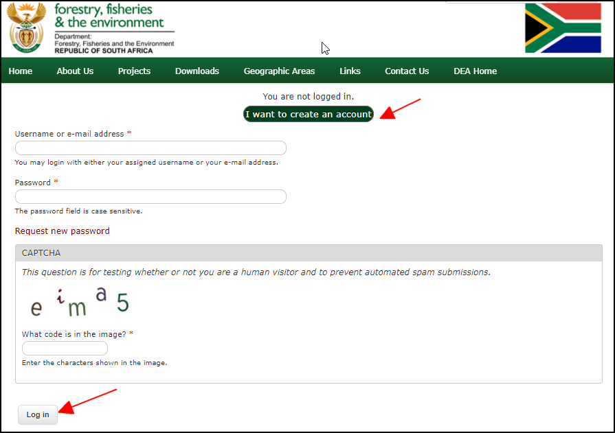
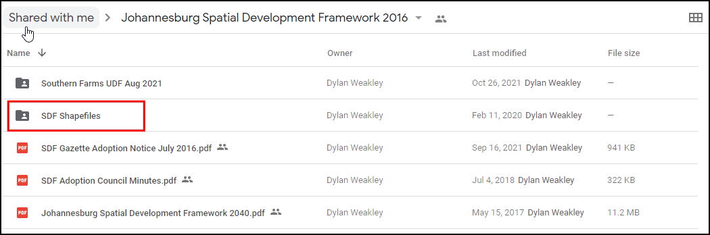
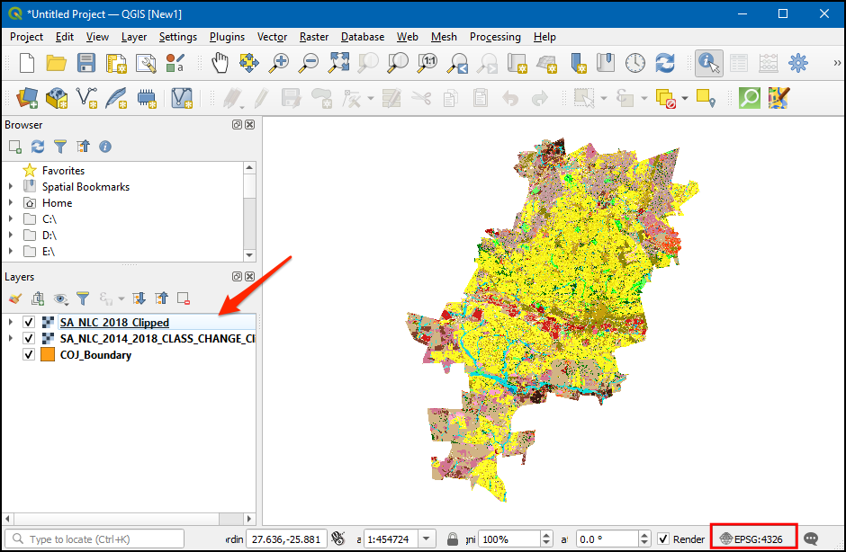
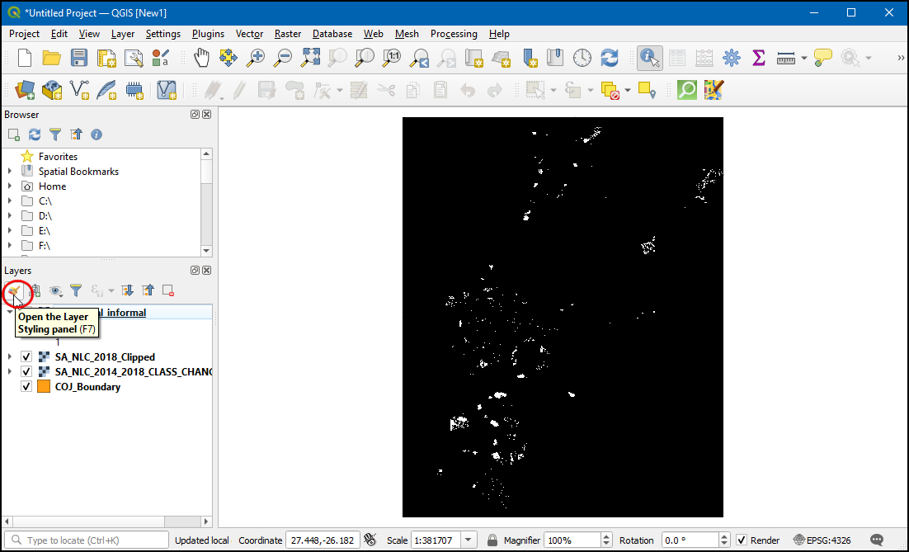
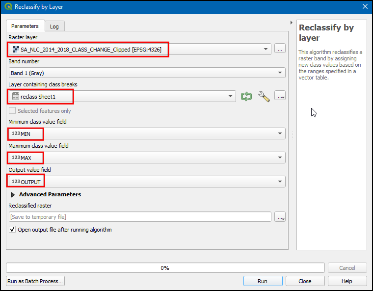

Gevorderde rasteranalyses (QGIS3)¶
In de vorige handleiding Basis opmaken en analyses van rasters (QGIS3), leerde u over het uitvoeren van algebra voor rasters met Raster Calculator. Deze handleiding bouwt voort op deze technieken en laat zien hoe u andere gereedschappen voor rasteranalyses uit de Toolbox van Processing gebruikt. U zult leren over het verwerken van rasters van Land Use Land Cover (LULC) in QGIS om bepaalde typen klassen van landgebruik en wijzigingen aan de kaart uit te nemen.
Overzicht van de taak¶
We zullen de gegevensset South African National Land Cover gebruiken om informele nederzettingen in Johannesburg, Zuid-Afrika te identificeren en uit te nemen. We zullen ook een gegevensset voor het bepalen van wijzigingen gebruiken om de stedelijke groeipatronen in de stad van 2014 tot en met 2018 te identificeren.
Andere vaardigheden die u zult leren¶
Hoe rastergegevens opnieuw te projecteren naar een andere projectie.
Hoe een bestand van Excel te laden in QGIS.
Hoe de transparantie van een rasterlaag aan te passen in QGIS.
De gegevens ophalen¶
We zullen voor deze handleiding de volgende gegevenssets downloaden:
De gegevensset South African National Land Cover 2018: De nieuwe gegevensset South African National Land-Cover 2018 is gemaakt uit 20 meter multi-seizoen Sentinel 2 satellietafbeeldingen en bevat 73 klassen voor landgebruik.
De South African National Land Cover 2018 Change Assessments: Deze gegevensset vergelijkt de wijzigingen in 20 klassen voor landgebruik van 2014 tot en met 2018.
COJ Boundary: Een shapefile met de grenzen voor Johannesburg, Zuid-Afrika.
De Environmental Geographical Information Systems (E-GIS) verschaft toegang tot georuimtelijke gegevens voor het milieu voor Zuid-Afrika. We zullen de rasters South African National Land-Cover (SANLC) vanaf dit portaal downloaden.
Ga naar de pagina GIS Data Download . Klik op I agree om de Conditions of Use te accepteren en ga door.

U zult een gratis account moeten maken om de gegevensset te kunnen downloaden. Klik op I want to create an account en volg de instructies om een account te maken.

Eenmaal ingelogd, zoek naar South African National Land Cover (SANLC) 2018 Computer Automated Land Cover (CALC). Deze gegevensset wordt verschaft in 2 verschillende projecties. Voor deze handleiding zullen we de gegevensset ALBERS downloaden. Klik erop om het bestand SA_NLC_2018_Albers_CALC_data.zip te downloaden.

Zoek vervolgens naar New South African National Land Cover (SANLC) 2014 and 2018 Change Assessment Datasets Computer Automated Land Cover (CALC) en klik op SA_NLC_2014_2018_CLASS_CHANGE_CALC (DATASET AND REPORT) om het bestand SA_NLC_2014_2018_CLASS_CHANGE_ALBERS_CALC.tif.vat.zip te downloaden.

De City of Johannesburg publiceert ruimtelijke gegevenssets als deel van de Spatial Development Framework 2040 (SDF) voor Johannesburg . We zullen de shapefile met grenzen van deze site downloaden.
Klik op de link voor het downloaden http://bit.ly/joburg-sdf-16.

Klik op de map
SDF Shapefiles.

Download het bestand
SDF Shapefiles.zipen pak het uit in een map.

Voor uw gemak is een geclipte versie van de gewenste lagen beschikbaar vanaf de link hieronder:
Procedure¶
Blader naar de map met gedownloade en bestanden in de Browser. Vergroot de map en sleep
SA_NLC_2018_ALBERS_CALC.tifnaar het kaartvenster en zet het neer.

Als de laag eenmaal is geladen, zult u opmerken dat het CRS zal zijn ingesteld als Onbekend CRS aan de rechteronderkant. Dubbelklik erop om het dialoogvenster Projecteigenschappen - CRS te openen.

Aan de onderzijde zult u een voorbeeld zien van het bereik van de projectie. Dit Onbekend CRS is een aangepaste Lambert Equal-Area Projection, gedefinieerd voor het land Zuid-Afrika. We zullen deze laag later opnieuw projecteren naar een andere projectie. Klik op OK.

Laad de andere twee lagen
SA_NLC_2014_2018_CLASS_CHANGE_ALBERS_CALC.tifenCOJ_Boundary. U zult zien dat de rasterlaag het gehele land bedekt. Voor onze analyse zijn we alleen geïnteresseerd in het gebied dat wordt bedekt door de laagCOJ_Boundary. We zullen nu de rasterlaag clippen naar deze regio. Ga naar het gereedschap . Dubbelklik om het te openen.

Selecteer, in Raster op maskerlaag clippen,
SA_NLC_2018_ALBERS_CALCals de Invoerlaag, danCOJ_Boundaryals Maskerlaag. We hebben ook een optie om de gegevens naar een andere projectie te projecteren. Het is goed gebruik om al uw gegevenslagen in dezelfde projectie te houden. We zullen de rasters opnieuw projecteren om overeen te komen met het CRS van de laagCOJ_Boundary. SelecteerEPSG:4326 - WGS 84als het Doel-CRS.

The default output data format is GeoTiff. GeoTiff files can get very large if they are not compressed. A good practice is to always apply a loss-less compression when creating new raster layers. Expand Advanced Parameters and choose
High Compressionas the Profile. Next, click the...button next to Clipped (mask) and select Save to file… to enter layer name asSA_NLC_2018_Clipped. Click Run.

Als het algoritme is voltooid, sluit dan niet het venster. We zullen dezelfde bewerking nogmaals toepassen op de andere rasterlaag. Schakel naar de tab Parameters en wijzig de Invoerlaag naar
SA_NLC_2014_2018_CLASS_CHANGE_ALBERS_CALC. Behoud alle andere opties, maar wijzig de naam van de uitvoerlaag naarSA_NLC_2014_2018_CLASS_CHANGE_Clipped. Klik op Uitvoeren.

Beide geclipte lagen zullen nu zijn geladen in het kaartvenster. Selecteer de originele laag en klik op Laag verwijderen om ze te verwijderen.

Alle drie resterende lagen zijn nu in hetzelfde CRS. We kunnen nu het project-CRS wijzigen naar het CRS van de lagen. Klik met rechts op een geclipte laag en kies .

Now the project CRS will be set to
EPSG:4326. Bring the SA_NLC_2018_Clipped layer to top.

Klik op SA_NLC_2018_Clipped en gebruik het gereedschap Objecten identificeren op de werkbalk Attributen om op de afbeelding te klikken en de pixelwaarden te inspecteren. U zult zien dat het bereik van de pixelwaarden ligt tussen 1 tot en met 73. Deze waarden geven een bepaalde klasse voor landgebruik/landbedekking weer.

De klassen voor de gegevensset worden beschreven in de
SANLC 2018 Presentation, die kan worden gedownload vanaf het EGIS Portal. Voor deze oefening zijn we geïnteresseerd in de informal settlements, weergegeven door de klassenummers 51 tot en met 54.

Laten we de pixels uitnemen die behoren tot deze klassen. Ga naar het gereedschap . Dubbelklik om het te openen.

Click the
...button next to Input layers. Select theSA_NLC_2018_Clippedlayer and click OK. Next, click on theεbutton to open the expression window.

Enter the following expression to select pixels from class 51-54. The source image has only 1 band. The
@1suffix indicates the band number. Click OK to close the expression window.
"SA_NLC_2018_Clipped@1" >= 51 AND "SA_NLC_2018_Clipped@1" <= 54
Next, click the
...button next to Calculated and select Save to File….

Noem het uitvoerbestand
residential_informal.tifen klik op Uitvoeren.

Als het proces is voltooid zal een nieuwe laag,
residential_informal, worden toegevoegd aan QGIS. Deze rasterlaag heeft slechts twee pixelwaarden -1waar onze expressie evalueerde naar true en0waar het false was. De pixels die als wit verschijnen zijn die welke behoren tot de klassen van de informal settlements. We zullen deze laag beter opmaken zodat we de informal settlements duidelijk kunnen zien. Klik op de knop Paneel Laag opmaken openen.

Select the
residential_informallayer and change the renderer to be Paletted/Unique values. Click the Add values manually (+) button.

Wijzig de Waarde naar
1en voerResidential Informalin als Label. Selecteer een kleur naar keuze.

We kunnen nu alle informal settlements in de stad Johannesburg zien. Het zou nuttig zijn om ze te bekijken in context met een basiskaart. We hebben toegang tot een variëteit aan basiskaarten vanuit de plug-in QuickMapServices. Ga, als de plug-in eenmaal is geïnstalleerd, naar om de laag OpenStreetMap toe te voegen.

Nu kunt u gemakkelijk identificeren en verifiëren of onze analyse de informal settlements correct identificeert. U kunt de laag
residential_informalselecteren en schakelen naar de tab Transparency in het Paneel Laag opmaken. U kunt de Globale doorzichtbaarheid verkleinen om zowel de uitgenomen pixels en de basiskaart samen te zien.

U hebt nu het eerste gedeelte van de handleiding voltooid. Nu zullen we de rasterlaag
SA_NLC_2014_2018_CHANGE_Clippedgebruiken om regio’s te identificeren die zijn verstedellijkt tussen 2014 en 2018. Schakel alle lagen uit, behalveSA_NLC_2014_2018_CHANGE_Clipped, en klik dan op de knop Paneel Laag opmaken openen. Schakel naar de tab Transparantie en voer0in als Waarde voor ‘geen data’. Dit zal de pixels met de waarde 0 als transparant instellen.

Gebruik het gereedschap Objecten identificeren op de werkbalk Attributen om op de afbeelding te klikken en de pixelwaarden te inspecteren. U zult zien dat het bereik van de pixelwaarden ligt tussen 21-240. Elke waarde geeft een overgang weer van een van de 73 bronklassen naar een andere klasse.

Uw download met gegevens bevat ook een werkbladdocument, genaamd
lcccodes.xlsx. Dit werkbladdocument heeft een werkblad 03 urban_change_codes dat meer details geeft over elke pixelwaarde. We zijn geïnteresseerd in alle pixelwaarden waarvan een klasse uit 2014 wijzigde naar een in 2018 opgebouwde klasse. In de afbeelding hieronder zijn die in blauw geaccentueerd.
Ons doel is om wijzigingen in de opgebouwde klassen in kaart te brengen. We zullen een transformatie toepassen op de laag
SA_NLC_2014_2018_CHANGE_Clippedzodat alle pixelwaarden in kaart worden gebracht vanuit hun originele waarden naar een van de volgende waarden.
|
Alle pixels die een opgebouwde klasse waren in zowel 2014 als in 2018 |
|
Alle pixels die wijzigden van een niet-opgebouwde klasse in 2014 naar een opgebouwde klasse in 2018. |
|
Alle resterende pixels |
We moeten, om dit te kunnen doen, een tabel maken die deze regels specificeert. Omdat QGIS in staat is om werkbladen direct te lezen, is het de meest handige methode om deze tabel te maken. Ons werkblad zou 3 kolommen moeten hebben,
MIN,MAX, enOUTPUT. Elke rij zou het bereik aan waarden voor het invoerraster moeten zijn dat moet worden toegewezen aan een uitvoerwaarde. Maak een werkblad zoals hieronder weergegeven en sla het op uw computer op alsreclass.xlsx. U zou ook een direct te gebruiken kopie kunnen downloaden vanaf deze link - reclass.xlsx

Zoek het bestand
reclass.xlsxop in de Browser. Sleep het en zet het neer in het hoofdvenster.

A new layer
Sheet1will be added to the Layers panel. Right-click on it and select Open Attribute Table. Verify that the sheet was imported correctly and you have 3 columns namedMIN,MAXandOUTPUT. Open the tool.

In the Reclassify by layer dialog, select
SA_NLC_2014_2018_CHANGE_Clippedas the Raster layer. SelectSheet1as the Layer containing class breaks. SelectMIN,MAXandOUTPUTfields for their respective fields.

Vergroot het gedeelte Geavanceerde parameters. Wijzig de Grenzen bereik naar
min <= waarde <= max. Klik op de knop … voor Opnieuw geclassificeerd raster en voer de naam voor het uitvoerbestand in alsbuiltup_change.tif. Klik op Uitvoeren.

Als de verwerking is voltooid zal een nieuwe laag
builtup_changemet pixelwaarden0-2worden toegevoegd aan het kaartvenster. Kies, in het Paneel Laag opmaken,Gepaletteerde/Unieke waarden, klik dan opClassificeren.

Kis de kleur van uw keuze voor elke categorie en label de pixelwaarden
0,1en2alsNiet opgebouwd,Bestaande opgebouwde klasseenNieuw opgebouwde klasse.

Verklein nu, op de tab Transparantie, de Globale doorzichtbaarheid, en schakel de laag
OSM Standardin om zowel de pixels van builtup_change als de basiskaart samen te zien.

If you want to give feedback or share your experience with this tutorial, please comment below. (requires GitHub account)